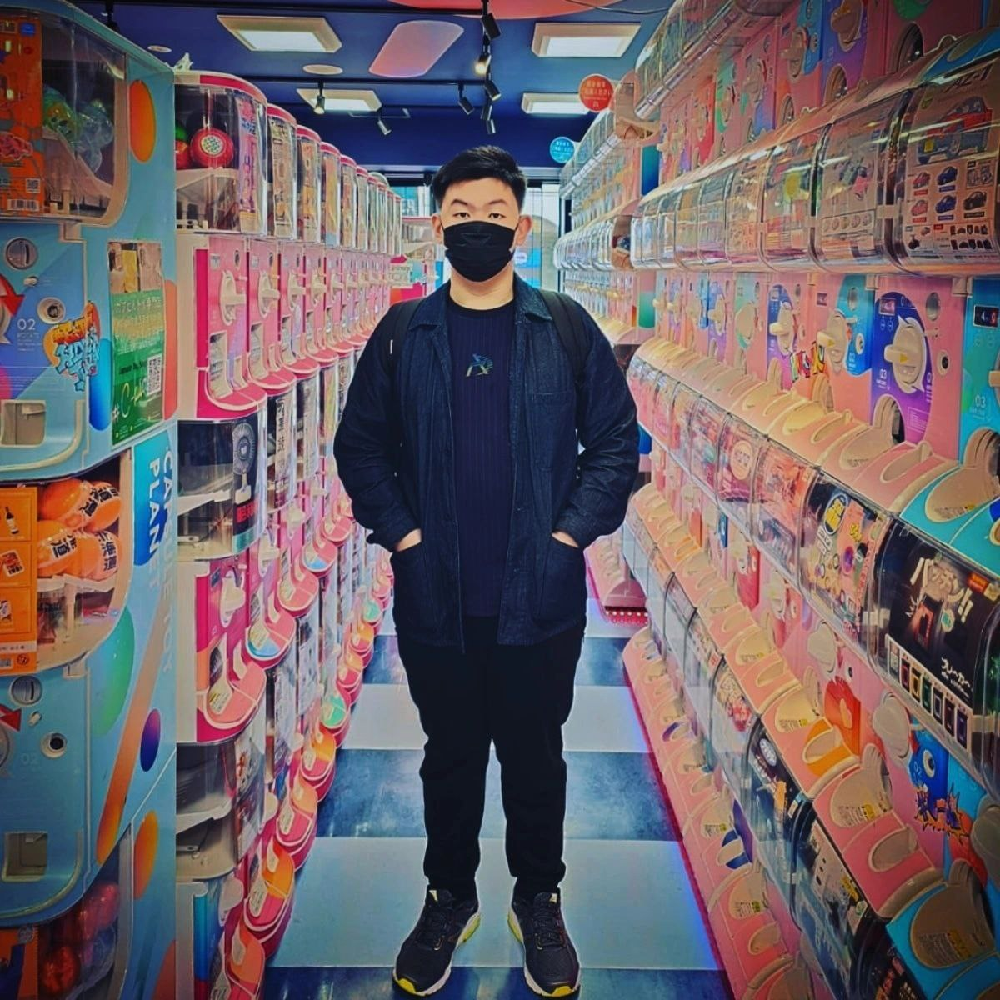
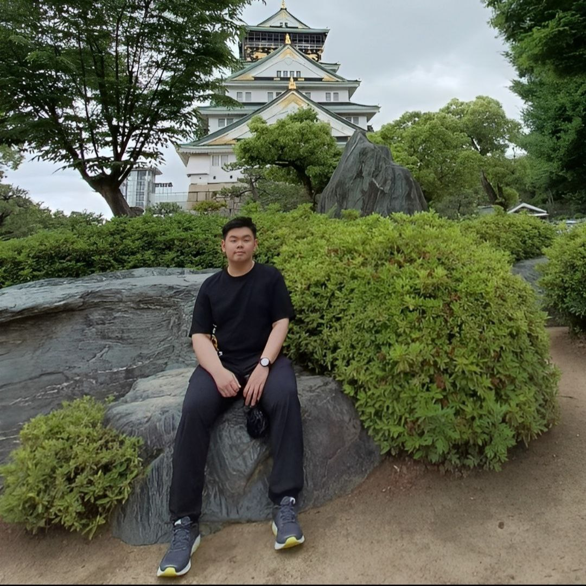
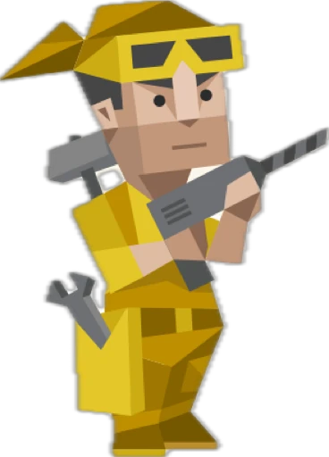
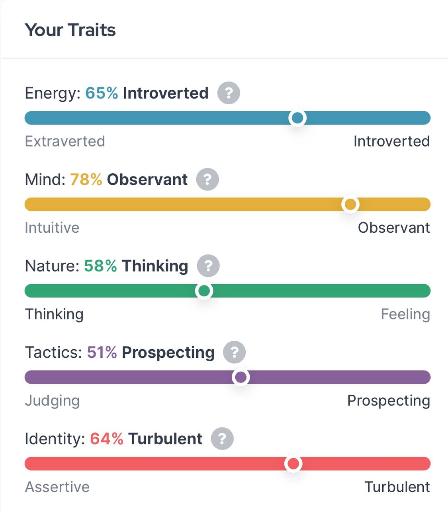

About me
Hi, I'm Jun Jie. I have a knack for making things more complicated than they need to be, enduring the struggle just for the thrill of it. But hey, everything always miraculously works out in the end!
Values
Loyalty
I believe loyalty creates a sense of security and mutual respect in standing by those who are important to me through thick and thin, supporting them and staying committed, no matter the circumstances.
Freedom
Freedom is a vital value to me as it lets me grow and be myself. Following my curiosity and trying new things, and speaking my mind without holding back; I believe that it can make life more meaningful.
Transparency
This value resonates with my belief in the importance of honesty and openness, which builds trust and understanding. Being transparent supports improves decision-making, and makes my relationships more genuine.
Interests
Gachapon
Traveling
Personality
Virtuoso (ISTP-T)
As an ISTP, I'm a straightforward and practical person who values getting straight to the point. I'm also adaptable, thrive in hands-on situations, and easily solve problems. While I can socialize well, I often prefer to recharge independently, valuing my independence and physical comfort.
 